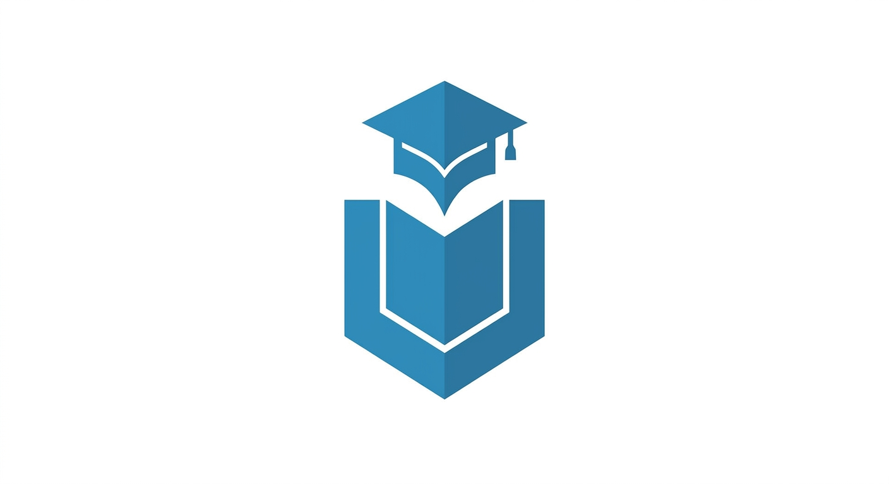
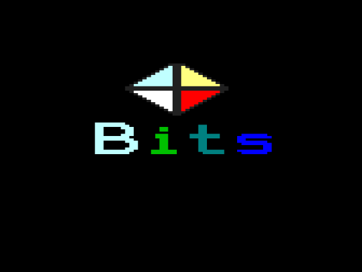

Estudiante de Ingeniería Informática
Portafolio profesional
Sebastián Barros
Estudiante de Ingeniería Informática
Soy estudiante de Ingeniería Informática con interés en el desarrollo de software, el desarrollo web y las bases de datos. Busco seguir aprendiendo y creando soluciones prácticas mediante la programación.
Ver proyectosConóceme
Sobre mí
Hola, soy Sebastián
Estudiante de Ingeniería Informática, enfocado en el desarrollo de software y en la creación de soluciones tecnológicas que permitan resolver problemas reales. Durante mi formación he trabajado con distintas tecnologías, desarrollando proyectos tanto académicos como personales que me han permitido aplicar y fortalecer mis conocimientos de programación.
Me interesa especialmente el desarrollo de software y la exploración de nuevas tecnologías. Busco seguir ampliando mis conocimientos, mejorar constantemente mis habilidades y enfrentar nuevos desafíos que me permitan crecer como profesional en el área informática.
Antes de iniciar mi formación superior, obtuve el título de Técnico en Contabilidad, experiencia que complementa mi perfil y me ha permitido desarrollar habilidades relacionadas con la organización, el análisis y el manejo de información.
Tecnologías
Mis habilidades
Principales herramientas y tecnologías con las que he trabajado:
Java
Python
JavaScript
SQL
Git / GitHub
AWS
Docker
En constante aprendizaje
Actualmente aprendiendo
Algunas tecnologías y áreas que estoy explorando:
Ciberseguridad
Aprendiendo conceptos de seguridad informática, buenas prácticas de protección de sistemas y fundamentos de redes y vulnerabilidades.
Inteligencia artificial
Explorando herramientas de IA, automatización y aplicaciones prácticas para el desarrollo de software.
Lenguajes de programación
Fortaleciendo mis conocimientos en lenguajes que ya conozco mientras continúo aprendiendo nuevas tecnologías.
Mis trabajos
Proyectos
Algunos proyectos que he realizado:
DOOR'S
Sistema de control de acceso para condominios con generación de códigos QR, registro de visitas y apertura remota de portón mediante una aplicación móvil conectada a un backend.
Android
Kotlin
Java
GitHub ↗
ChatBot Ripley
Chatbot con inteligencia artificial diseñado para asistir consultas sobre productos y servicios, integrando procesamiento de lenguaje natural y servicios en la nube.
Python
CSS
AWS
GitHub ↗

Instituto Pacifico
Plataforma de gestión académica basada en una arquitectura de microservicios para administrar usuarios, cursos y procesos internos de una institución educativa.
Java
Docker
Spring Boot
Microservicios
GitHub ↗

BITSS
Sitio web de ventas de videojuegos digitales, desarrollado con una arquitectura de microservicios, utilizando Spring Boot, Docker y AWS para crear una solución escalable orientada a servicios.
Spring Boot
Docker
Microservicios
Java
AWS
GitHub ↗
Ponte en contacto
Contacto
¿Tienes alguna pregunta? Puedes escribirme.